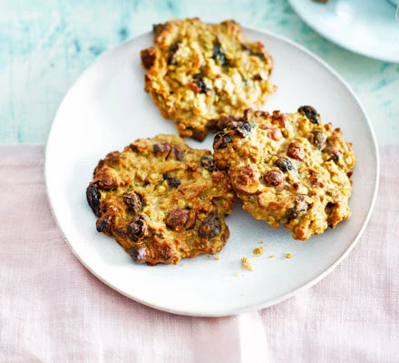

Oaty hazelnut cookies

Description
Soft and slightly chewy, these oaty cookies contain apple and maple syrup instead of sugar.
They're packed with hazelnuts which are a good source of vitamins and minerals
Ingredients
- 50g butter , plus a little for greasing
- 2 tbsp maple syrup
- 1 dessert apple, unpeeled and coarsely grated (you need 85g)
- 1 tsp cinnamon
- 50g raisins
- 50g porridge oats
- 50g spelt flour
- 40g unblanched hazelnuts , cut into chunky slices
- 1 egg
- Heat oven to 180C/160C fan/gas 4 and lightly grease a non-stick baking tray
(or line a normal baking tray with baking parchment). Tip the butter and syrup
into a small non-stick pan and melt together, then add the apple and cook,
stirring, over a medium heat until it softens, about 6-7 mins.
Stir in the cinnamon and raisins.
-
Mix the oats, spelt flour, and hazelnuts in a bowl,
pour in the apple mixture, then add the egg and beat everything together really well.
-
Spoon onto the baking tray, well spaced apart to make 9 mounds, then gently press into discs.
Bake for 18-20 mins until golden, then cool on a wire rack.
Will keep for 3 days in an airtight container or 6 weeks in the freezer.